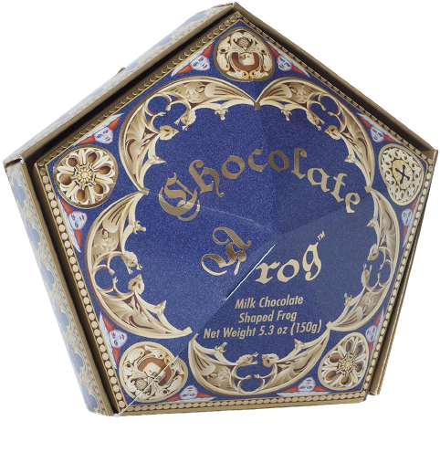

HONEYDUKES
Our Most Popular Product!

Chocolate Frogs
Chocolate Frogs are a very popular wizarding sweet made from chocolate in the form of a frog. They come with a collectible card of a famous witch or wizard in each pack. The frogs are made of seventy percent croakoa. Presumably, this substance is what allows them to magically act like an actual frog and gives them the ability to hop and croak.
More Info